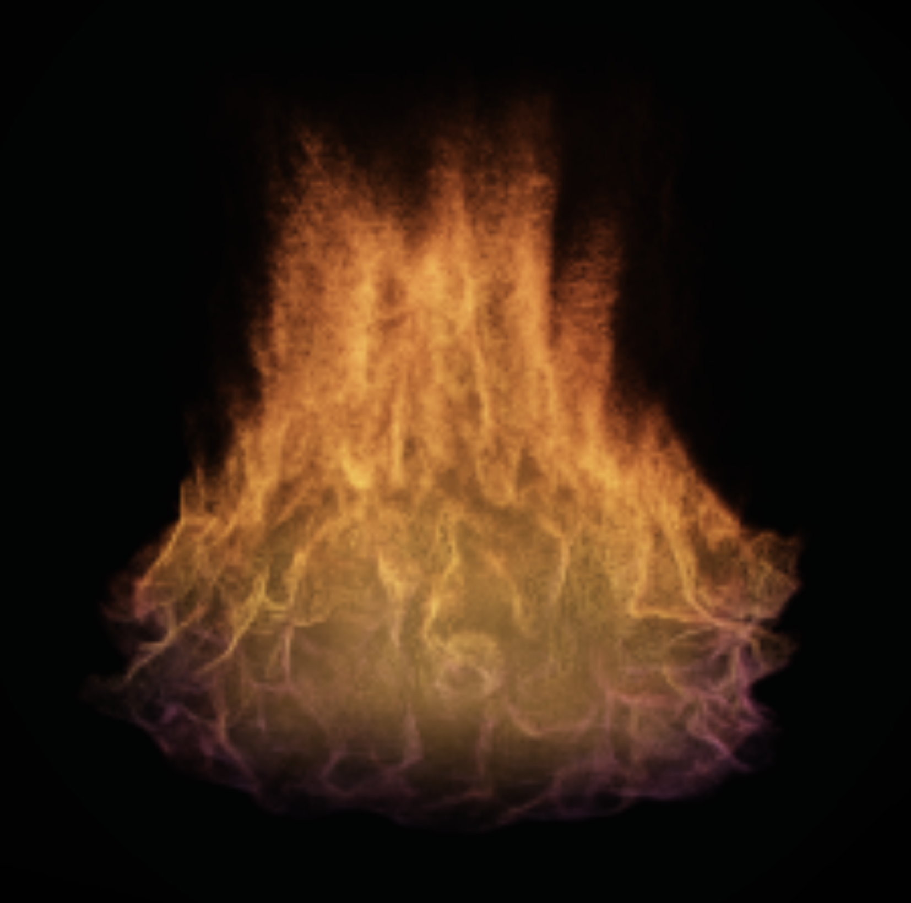

Phase transition
A cool rooted body expands, narrows, and opens again while the violet interface remains continuous.
Browser-native WebGPU material
Complete compositions and material studies captured directly from the live browser runtime while one stateful volumetric process was being authored.

A violet-rooted ignition grows into a warm column, develops width and lean, constricts toward a needle, then reblooms as a low burner before withdrawing into darkness. Momentum carries every control change through the material already in flight.
A cool rooted body expands, narrows, and opens again while the violet interface remains continuous.
A broad amber burner collapses toward a jet, gathers momentum, and rebuilds its body without resetting.
A blue base catches, rises into a hot orange body, constricts, and leaves the frame.
A compact blue body accelerates laterally, carries a violet crown across its footprint, and withdraws into smoke.
Orange crown, luminous reaction interface, and a blue-violet rooted body.
The material contracts, gathers momentum, and opens into a broad warm burner.
A connected cool-spectrum passage with a changing footprint and upper crown.
A compact body rises, narrows, and rebuilds into a taller violet-edged column before withdrawing.
Thin lateral sheets and filament-rich breakup move through the body.
A state-history transition from a broad column into a narrower form.
An alternate blue-violet treatment with broad low-frequency movement.
These films were captured directly from the live browser runtime while the simulation was being authored. Their source timing is preserved without retiming, interpolation, optical flow, cadence repair, or frame synthesis. This presentation makes no simulator frame-rate, universal device-performance, or final quality-tier claim.